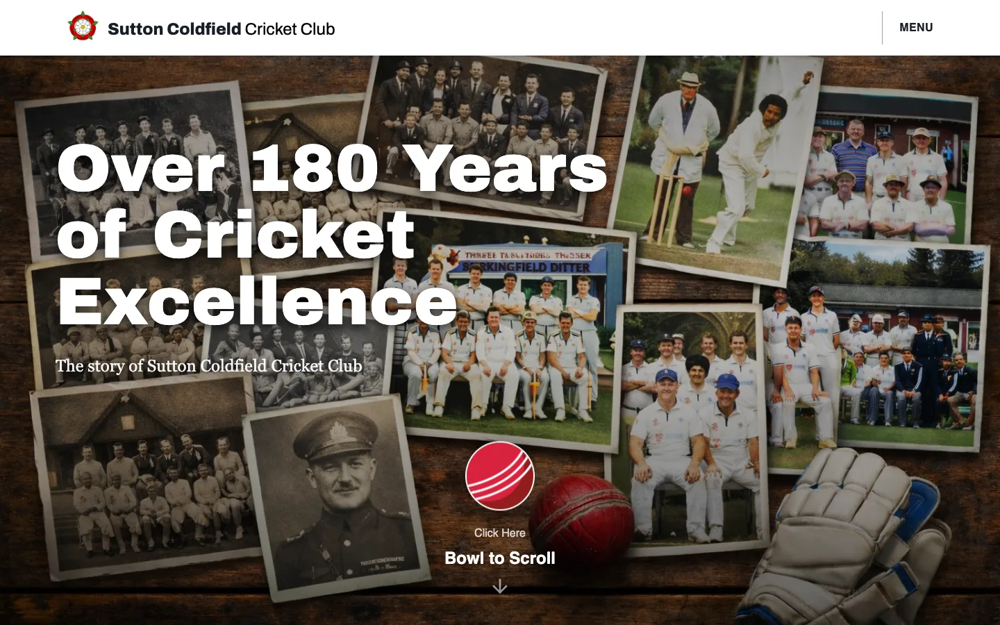
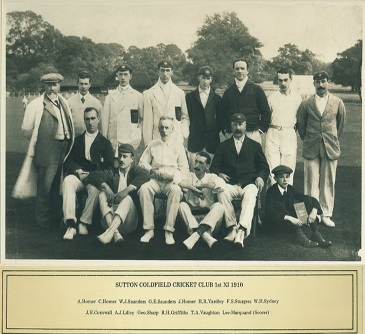
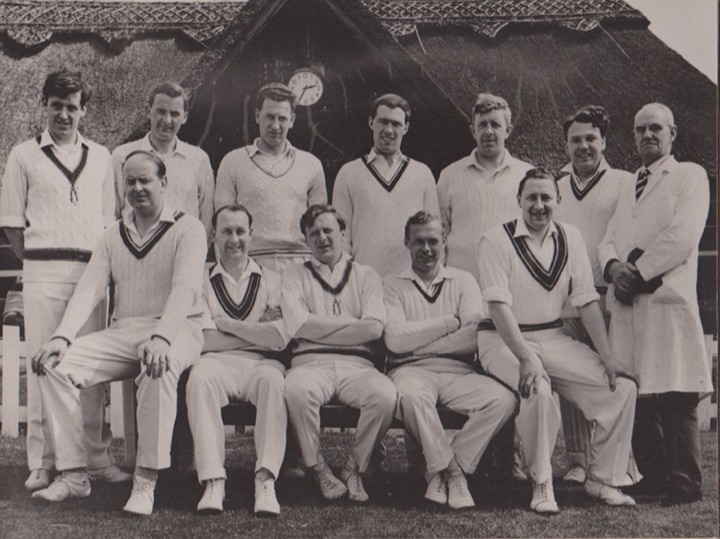
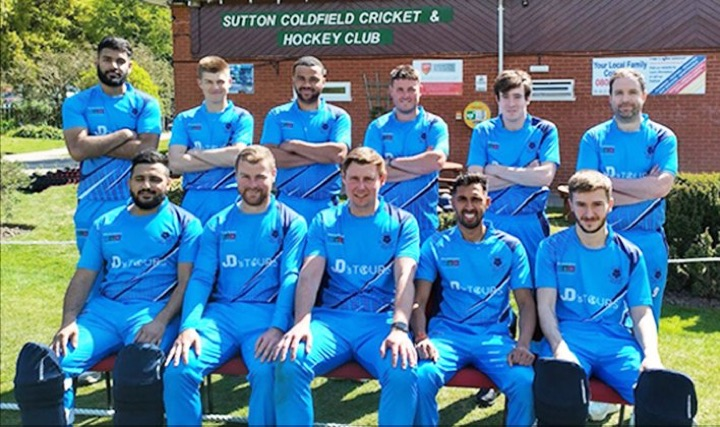

Every season since 1847.
A history website for Sutton Coldfield Cricket Club, bringing the club’s photos, scorebooks and minute books since 1847 together in one timeline. To get in, you bowl a cricket ball.



The club had nearly 180 years of archive, from team photos to scorebooks and minute books, and wanted one place to keep it where members could actually read it on their phones.
- A slider through the decades, with a cricket ball for a handle
- A home page that opens when you bowl the ball
- Roll of honour cards for the 39 members who served
- Archivo Black for headings and Georgia for the long stories
- Built with React, Vite and Tailwind
Club history you can read on your phone.
The long stories are set in big type that’s comfortable on a small screen. Every photo has a caption, and the menu is never far away.
From the first ball to the team photos.
The live site on a desktop, from bowling the ball through to the archive photos.
Built from the club’s own archive.



Club ArchivesTeam photos · 1859–2022
The Men that Served
Over 180 years of history, finally somewhere members can read it on their phones. Bowling the ball to open the site gets a smile every time, and the roll of honour means a great deal to the club.
Colours from the crest and the outfield.
The crimson is taken from the Tudor rose on the club crest and the green from the Rectory Park outfield, so both colours already belonged to the club.
Sutton Coldfield Cricket Club
Over 180 Years of Cricket Excellence
Archivo Black for headings. The long stories and captions are set in Georgia, which gives them the feel of the club’s old minute books.
Other projects you might like.


Let’s make something people like to use.
Tell me a bit about your business and what you need. I usually reply within a working day.
jb.designagency89@gmail.com